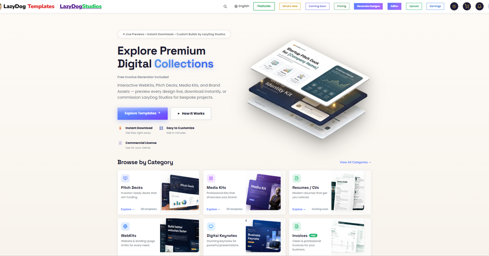

The LazyDog Editor has lived in a browser tab since the day we built it. That was the right way to start — nothing to install, works on any machine, open a link and you're editing. But a browser tab is a borrowed room. It closes when you close it, it competes with thirty other tabs for memory, and it never quite feels like your tool. So we are building the editor as a proper Windows application, and it will be a free download.

Why a desktop app at all
Fair question, and "because desktop apps are nicer" is not an answer. Four things change when the editor stops being a tab.
It starts where you left off
An application remembers. Your recent files, your window size, the deck you had open on Friday afternoon — all still there on Monday.
Your files stay yours
Open a deck straight from your Documents folder and save it back. No uploading a file just to edit it, no downloading it again afterwards.
It stops fighting your browser
No tab crashes taking your work with them, no memory shared with a hundred other pages, no accidental close on a busy afternoon.
It feels like a tool
A taskbar icon, a proper file menu, keyboard shortcuts that are yours alone because no browser is intercepting them first.
What is actually in it
If you have used PowerPoint, you already know the shape of it — and that is deliberate. A full ribbon across the top: Home, Insert, Draw, Design, Transitions, Animations, Slide Show, Review, View and a Format tab that wakes up when you select something. Paste and format painter, new slide and duplicate, the font and paragraph controls where your hands expect them, arrange and align, find and replace.
Down the left is the part that is ours rather than borrowed: Templates, Elements, Photos, Backgrounds, Layers, Brand, Effects, Data, AI, Components and Projects. Brand holds your colours and fonts so a deck can be re-skinned in one move. Layers does what layers do everywhere. Projects is your own shelf of work in progress.
Along the bottom, the slide navigator with every slide as a thumbnail, a zoom control, and a presenter button. The deck in the screenshot above is on slide 21 of 32 — a real deck, not a demo file.
The AI panel, and what it costs
The AI tab opens a panel with the automated tools, grouped the way you would actually reach for them:
- Create — build a whole presentation, add a single slide, add several, or drop in mock-ups.
- Text — rewrite, summarise, or translate what is already on the slide.
- Image — remove a background without leaving the editor.
Everything in that panel is the paid part. Everything outside it is not. That line is not a technicality — it is the whole pricing model, and it is drawn exactly where our own costs are.

Editing stays free. That is not changing.
We want to be plain about this, because "free app" usually turns out to mean "free until you try to do anything with it".
Typing, moving, resizing, restyling, exporting — free, always. The application is free to download and free to use. What costs money is the automated work: asking the editor to compose a deck for you, or to fill an entire template from a page of your own content. That work runs on AI models we pay for by the request, so it runs on tokens. Everyone gets a small balance on signing up, and there is a subscription for people who use it heavily — the plans are live now on the pricing page, and explained in full in the next post.
If you never touch the automated tools, the desktop editor costs you nothing, forever.
What is honestly not decided yet
- The release date. It is in development. We would rather ship it late and working than early and embarrassing.
- Mac. Windows first, because that is where most of you are. A Mac build is a question for after Windows is solid, not a promise today.
- How much works without internet. Editing a file already on your machine should not need a connection. The AI tools always will, because the work happens on a server. Where exactly the line falls is something we are still testing properly.
We would rather list the unknowns than quietly leave them out and have you discover them on install day.
In the meantime the web editor is live and free to use, with every template in the store ready to open in it.